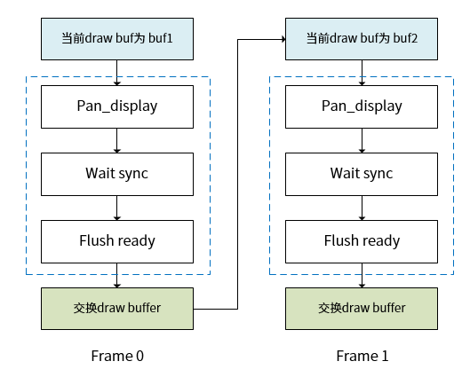
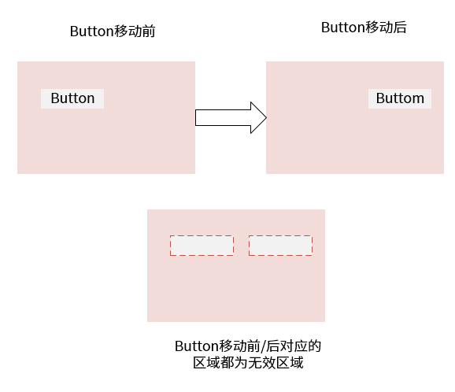
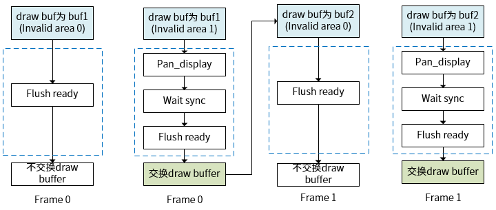

显示对接
LVGL 显示对接主要包括以下步骤和流程：
-
绘制 buffer 初始化，用于存储当前帧的图像数据，并在需要时进行交换。
-
flush_cb 对接，刷新回调函数，用于将绘制缓冲区的数据发送到显示屏。刷新回调函数又分为以下两种模式：
- 全刷新
- 局部刷新
-
2D 硬件加速对接。
为了提高绘图性能，可以将部分绘图操作进行硬件加速。
- 将上述所有配置注册到 LVGL 中。
绘制 buffer 初始化
void lv_disp_draw_buf_init(lv_disp_draw_buf_t * draw_buf, void * buf1, void * buf2, uint32_t size_in_px_cnt)
-
buf1：无论选择单缓冲或多缓冲，必须设置此 buffer。
-
buf2：选择双缓冲时，需要配置此 buffer，单缓冲不需要配置。
-
size_in_px_cnt：以像素为单位的 buf 大小，应该根据实际的分辨率来计算。
flush_cb 对接
以双缓冲为例，flush_cb 回调函数的处理流程分别如下所示，包括 full_refresh 和 direct_mode 两种绘制模式：
-
full_refresh：即全刷新模式，每一帧都刷新整个显示屏。流程如下：
- 直接通过 pan_display 接口将当前绘制缓冲区（draw buffer）发送到显示设备。
- 等待垂直同步（vsync）中断，确保数据已经显示在屏幕上。
- 调用 lv_disp_flush_ready 通知 LVGL 框架刷新结束。
- LVGL 框架会自动交换绘制缓冲区。

图 2. 全刷新模式下 flush_cb 回调函数的处理流程 -
direct_mode：即局部刷新，每一帧只刷新需要更新的无效区域（可以有多个无效区域）。流程如下：
- 遍历所有无效区域，例如 invalid area0 和 invalid area1，将每个无效区域的数据从绘制缓冲区发送到显示设备。
- 最后一个无效区域处理完毕后，调用 lv_disp_flush_ready 通知 LVGL 框架刷新结束。
- LVGL 框架会自动交换绘制缓冲区。

图 3. 无效区域 
图 4. 局部刷新模式下 flush_cb 回调函数的处理流程 flush_cb 的实现代码 fbdev_flush 如下：static void fbdev_flush(lv_disp_drv_t * drv, const lv_area_t * area, lv_color_t *color_p) { int index = 0; lv_disp_t * disp = _lv_refr_get_disp_refreshing(); lv_disp_draw_buf_t * draw_buf = lv_disp_get_draw_buf(disp); if (!disp->driver->direct_mode || draw_buf->flushing_last) { if (disp->driver->direct_mode) aicos_dcache_clean_invalid_range((unsigned long *)info.framebuffer, (unsigned long)info.smem_len * 2); else aicos_dcache_clean_invalid_range((unsigned long *)color_p, (unsigned long)info.smem_len); if ((void *)color_p == (void *)info.framebuffer) index = 0; else index = 1; mpp_fb_ioctl(g_fb, AICFB_PAN_DISPLAY , &index); mpp_fb_ioctl(g_fb, AICFB_WAIT_FOR_VSYNC, 0); if (drv->direct_mode == 1) { for (int i = 0; i < disp->inv_p; i++) { if (disp->inv_area_joined[i] == 0) { sync_disp_buf(drv, color_p, &disp->inv_areas[i]); } } } lv_disp_flush_ready(drv); } else { lv_disp_flush_ready(drv); } }
2D 硬件加速对接
- 在 lv_draw_aic_ctx_t 结构体中包含
lv_draw_ctx_t 和 blend
函数。
lv_draw_aic_ctx_t 是一个包含了硬件加速功能的上下文结构体，继承自 lv_draw_sw_ctx_t 并添加了硬件加速所需的成员函数。关于详细绘制函数的说明，可查看 lv_draw_ctx_t 中的绘制函数。
typedef struct { lv_draw_ctx_t base_draw; /** Fill an area of the destination buffer with a color*/ void (*blend)(lv_draw_ctx_t * draw_ctx, const lv_draw_sw_blend_dsc_t * dsc); } lv_draw_sw_ctx_t; -
初始化 lv_draw_aic_ctx_t 硬件加速上下文结构体，并将软件实现的绘制函数替换为硬件加速版本的函数。
void lv_draw_aic_ctx_init(lv_disp_drv_t * drv, lv_draw_ctx_t * draw_ctx) { lv_draw_sw_init_ctx(drv, draw_ctx); lv_draw_aic_ctx_t * aic_draw_ctx = (lv_draw_aic_ctx_t *)draw_ctx; aic_draw_ctx->blend = lv_draw_aic_blend; aic_draw_ctx->base_draw.draw_img = lv_draw_aic_draw_img; aic_draw_ctx->base_draw.draw_img_decoded = lv_draw_aic_img_decoded; return; }draw_rect、draw_line 等接口操作的功能由多个步骤组成，虽然未进行硬件加速，但是操作的部分实现会调用到 blend，而 blend 接口进行了硬件加速对接。
-
实现硬件加速的 blend 函数，该函数会调用底层硬件加速 API 来实现高效的混合操作。
先调用 lv_draw_sw_init_ctx 函数把所有绘制操作都初始化为软件实现，对可以硬件加速的接口重新实现， 覆盖原来的软件实现。
- 继续实现其它硬件加速的绘制函数，例如 draw_img 和 draw_img_decoded。
成员 |
说明 |
是否硬件加速 |
|---|---|---|
void *buf |
当前要绘制的 buffer |
- |
const lv_area_t * clip_area |
绘制区域裁剪（以屏幕为参考的绝对坐标） |
- |
void (*draw_rect)() |
绘制矩形（包括圆角、阴影、渐变等） |
否 |
void (*draw_arc)() |
绘制弧形 |
否 |
void (*draw_img_decoded)() |
绘制已经解码后的图像 |
是 |
lv_res_t (*draw_img)() |
绘制图像（包括图片解码） |
是 |
void (*draw_letter)() |
绘制文字 |
否 |
void (*draw_line)() |
绘制直线 |
否 |
void (*draw_polygon)() |
绘制多边形 |
否 |
显示驱动注册
-
通过 lv_disp_draw_buf_init 初始化绘制 buffer。
-
通过回调 flush_cb 来注册显示接口。
-
通过 lv_draw_aic_ctx_init 来注册 2D 硬件加速相关接口。
-
通过 lv_disp_drv_register 来注册 lv_disp_drv_t。
disp_drv.full_refresh = 0; disp_drv.direct_mode = 1;
disp_drv.full_refresh = 1; disp_drv.direct_mode = 0;
static lv_disp_drv_t disp_drv;
void lv_port_disp_init(void)
{
void *buf1 = RT_NULL;
void *buf2 = RT_NULL;
uint32_t fb_Size;
rt_err_t result;
g_fb = mpp_fb_open();
if (g_fb == 0) {
LOG_E("can't find aic framebuffer device!");
return;
}
result = mpp_fb_ioctl(g_fb, AICFB_GET_SCREENINFO, &info);
if (result != RT_EOK) {
LOG_E("get device fb info failed!");
return;
}
g_ge = mpp_ge_open();
if (!g_ge) {
LOG_E("ge open fail\n");
return;
}
fb_Size = info.height * info.stride;
buf1 = (void *)info.framebuffer;
buf2 = (void *)((uint8_t *)info.framebuffer + fb_Size);
lv_disp_draw_buf_init(&disp_buf, buf2, buf1,
info.width * info.height);
lv_disp_drv_init(&disp_drv);
/*Set a display buffer*/
disp_drv.draw_buf = &disp_buf;
/*Set the resolution of the display*/
disp_drv.hor_res = info.width;
disp_drv.ver_res = info.height;
disp_drv.full_refresh = 0;
disp_drv.direct_mode = 1;
disp_drv.flush_cb = fbdev_flush;
disp_drv.draw_ctx_init = lv_draw_aic_ctx_init;
disp_drv.draw_ctx_deinit = lv_draw_aic_ctx_deinit;
disp_drv.draw_ctx_size = sizeof(lv_draw_aic_ctx_t);
/*Finally register the driver*/
lv_disp_drv_register(&disp_drv);
}